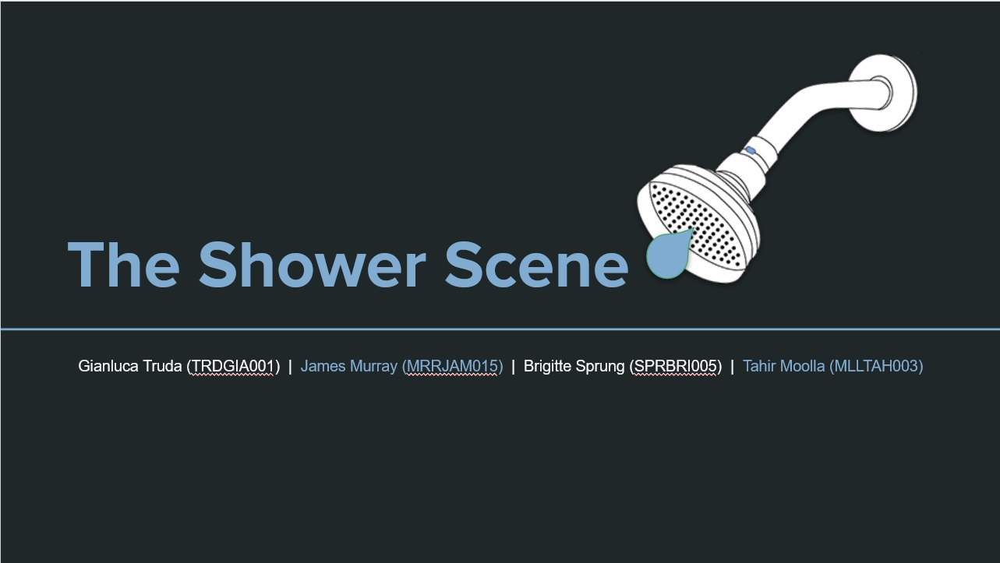
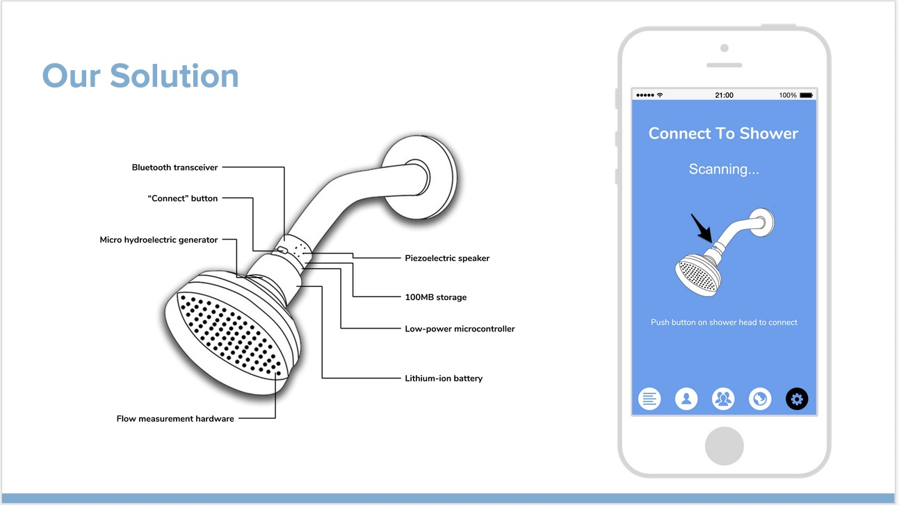

UI/UX Design ofShowerScene
An HCI collaborative project

An HCI collaborative project
In drought-stricken areas, the responsibility to conserve water falls on citizens. Traditional methods can be effective, but water used for self-cleaning still comprises a large and often unquantified portion of residential water consumption. This project makes use of smart shower heads and supporting smartphone software to remedy the problem.
Design
HCI
UI/UX
This project details how iterative user interface development was performed and how user feedback lead to more refined prototypes. It was found that most interviewees shower in the same location 5-8 times per week, but have no ways to quantify their usage. This inspired the approach of replacing existing shower heads with smart ones.
Along with the interview responses, this insight lead to the creation of three personae and a list of scenarios that guided the idea generation process. Thereafter, three prototype iterations, interleaved with either heuristic or interview evaluations, produced improved designs that addressed user concerns. These included a preference for bar graphs over cumulative frequency graphs, the need for unambiguous Bluetooth pairing, and the need for more descriptive terminology throughout the app.
The process of developing the application was comprised of four distinct stages — primary research, task analysis and goals, idea generation, and three iteration-evaluation cycles. In total, 23 individuals outside the team participated in the various interviews and evaluations.
This research was, at its core, an investigation of user interface design methodology. However, the potential for a smart shower head and a social-nudge application is significant. For a team to pursue this idea further, a high-fidelity, interactive prototype would be indispensable. Hardware prototyping would also be essential to extend this project into a viable product. This, paired with more cycles of user evaluation, would allow for the finer details of the application to be refined.